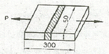

누설비파괴검사기사(구) (2013-06-02 기출문제)
1과목: 누설시험원리
1. 일반적으로 누설률을 확인하고자 할 때의 측정법에 해당되지 않는 것은?
- 압력변화 측정법
- 방사성 동위원소 계수법
- 적외선 가스 분석법
- 비누방울 검사법
(정답률: 알수없음)

2. 다음 중 점성유동에 대한 설명이 아닌 것은?
- 기체의 자유도가 누설직경보다 크다.
- 압력차이에 비례한다
- 고압력 시스템에서 발생한다.
- 레이놀드 상수와 관련이 있다.
(정답률: 알수없음)
3. 거품검사를 실시하기 전에 수행해야 하는 검사방법은?
- 액체침투탐상검사
- 수압검사
- 자분탐상검사
- 육안검사
(정답률: 알수없음)
4. 누설검사를 실시한 결과 불합격되는 누설이 검출되었다. 그 이후의 조치사항으로 적합한 것은?
- 누설부분을 보수하고 동일절차서에 따라 재검사한다
- 보수 후 액체 침투탐상검사를 실시한다.
- 보수 후 다른 누설탐상 기체로 재검사한다.
- 보수 후 누설검사 기법을 변화시켜 재검사한다.
(정답률: 알수없음)
5. 누설시험에 사용하는 진공펌프 중에 확산펌프(diffusion pump)는 다음의 어느 기체유동에서 작동하는가?
- 와류유동
- 층상유동
- 천이유동
- 분자유동
(정답률: 알수없음)
6. 발포누설시험에서 시험 용액을 적용하는 방법이 아닌 것은?
- 시험면에 흘린다.
- 시험면에 분무한다.
- 시험면에 솔질한다.
- 시험면에 가압한다.
(정답률: 알수없음)
7. 자력에 대한 자속밀도의 비율을 투자율이라 한다. 다음 중 자력이 시험체가 없을 때와 동일 점에서 측정될 때의 투자율을 무엇이라 하는가?
- 초기투자율
- 실효투자율
- 재료투자율
- 최대투자율
(정답률: 알수없음)
8. 다음 중 방사선투과검사로 판단하기 가장 곤란한 것은?
- 시험체 조직구조
- 결함의 모양
- 결함의 높이
- 콘크리트 내부 구조
(정답률: 알수없음)
9. 전자기유도 원리인 와전류탐상검사에서 와전류와 자장에 관한 설명으로 틀린 것은?
- 와전류란 교류 자장에 의해 전도체 안에 유도된 원형의 전류이다
- 시험 코일 안에 전도체를 위치시키면 코일의 자장이 전도체에 전류를 유도한다.
- 전도체 안의 와전류는 시험 코일에서 발생하는 자장과 동일한 방향의 약한 자장을 만든다.
- 시험 코일이 결함 위를 통과할 때 와전류에 의해 발생하는 자장의 변화가 와전류 흐름을 변화시킨다.
(정답률: 알수없음)
10. 다음 중 기계나 구조물의 설계시 치수, 형상, 재료의 적합성을 판단하거나 혹은 제작된 기계나 구조물이 사용중 변형, 파손되지 않도록 감시하는데 이용되는 검사법은?
- 누설검사
- 전위차시험법
- 스트레인 측정
- 전자초음파공명법
(정답률: 알수없음)
11. 초음파누설검사의 장점이 아닌 것은?
- 특별한 추적가스가 필요치 않다.
- 잡음신호가 발생될 때에도 검사가 가능하다.
- 누설시 음파가 발생하면 어떤 유체에도 사용이 가능하다.
- 대기 중으로 누설이 존재하면 음파를 발생할 때 측정이 가능하다.
(정답률: 알수없음)
12. 누설검사법 중 가열양극 할로겐법의 장점이 아닌 것은?
- 사용이 간편하고, 휴대용이다.
- 대기압 하에서 작업할 수 있다.
- 모든 추적 가스에 응답이 가능하다.
- 기름에 막혀있는 누설을 검출할 수 있다.
(정답률: 알수없음)
13. 진공상자 누설검사법의 일반적인 감도(Pa·m3/s)는?
- 10-6∼10-8
- 10-5∼10-6
- 10-2∼10-3
- 1∼10-2
(정답률: 알수없음)
14. 별도의 전원 공급 장치 없이 검사가 가능한 비파괴 검사법은?
- 누설검사
- 염색침투탐상검사
- 초음파탐상검사
- 와전류탐상검사
(정답률: 알수없음)
15. 금속을 자석에 접근시킬 때, 자석의 극과 반대되는 극이 생겨 서로 잡아당기는 것으로 대표적인 금속이 Mn인 자성체는?
- 상자성체
- 초자성체
- 강자성체
- 비자성체
(정답률: 알수없음)
16. 구부러진 관 내부를 육안검사할 때 이용하기 편리한 광학 기구는?
- MIcroscope
- Borescope
- Magnifier
- Telescope
(정답률: 알수없음)
17. 비파괴검사의 주목적이라고 볼 수 없는 것은?
- 신뢰성 향상
- 제조 원가의 절감
- 제조 공정의 개선
- 최상의 품질확보
(정답률: 알수없음)
18. 제품을 설계할 때 개념(conceptual)설계, 예비설계, 배치 설계(lay out), 상세설계의 단계로 이루어진다고 한다. 이 중 비파괴검사의 적용성을 고려해야 할 단계는?
- 배치설계
- 예비설계
- 개념설계
- 상세설계
(정답률: 알수없음)
19. 와전류탐상시험법에 대한 설명 중 틀린 것은?
- 자동화에 용이하다.
- 비접촉성 검사 방법이다.
- 표면 결함의 검출능력이 우수하다.
- 강자성체 금속에 적용이 유리하다.
(정답률: 알수없음)
20. 시험부의 양쪽 면에 접근 가능해야만 검사를 할 수 있는 비파괴검사법은?
- 자분탐상검사
- 침투탐상검사
- 초음파탐사검사
- 방사선투과검사
(정답률: 알수없음)
2과목: 누설검사
21. 다음 누설검사 중 색변화를 이용한 검출법이 아닌 것은?
- 암모니아 누설시험
- 할라이드 토치법
- 가스크로마토그래피법
- 수용성 용지와 알루미늄 호일에 의한 검사
(정답률: 알수없음)
22. 헬륨질량분석-진공시스템에서 표준누설 1×10-9Pa·m3/s, 출력 신호 100 division 및 지시 눈금당 10의 누설률을 가질 때 누설 검출기 감도는 얼마인가? (단, division : 최소 누설률 지시 척도(눈금) 이다.)
- 2×10-10Pa·m3/s/div
- 2×10-11Pa·m3/s/div
- 1×10-12Pa·m3/s/div
- 1×10-13Pa·m3/s/div
(정답률: 알수없음)
23. 할로겐 다이오드 검출기 누설시험에서 일반적으로 이용되는 할로겐 추적가스는?
- R-10
- R-12
- R-20
- R-23
(정답률: 알수없음)
24. 미소 누설을 탐지하고자 할 때 시험체의 표면에 검사용액을 적용하는 방법으로 가장 적절한 것은?
- 검사용액의 표면장력을 감소시킨다.
- 기포형성이 없도록 두껍게 도포한다.
- 많은 거품이 나도록 빠르게 적용한다.
- 표면의 세척 여부에 무관하게 적용한다.
(정답률: 알수없음)
25. 시험종료 후 용기 내에 남아있는 할로겐추적가스와 습기가 미치는 영향은?
- 용기를 냉각시킨다.
- 폭발성 혼합물을 생성한다.
- 응력부식을 가속시킨다.
- 포스겐 가스를 생성한다.
(정답률: 알수없음)
26. 액상염료추적자 누설검사에 사용되는 형광추적자용 염료에 해당되지 않는 것은?
- 수용성 증감염료
- 유용성 증감염료
- 후유화성 증감연료
- 수용성 색체대비염료
(정답률: 알수없음)
27. 할로겐누설시험에 사용되는 추적가스의 화학식이 잘못된 것은?
- R11-CCl3F
- R12-CCl2F2
- R13-CClF3
- R22-CHCl2F
(정답률: 알수없음)
28. 기체 방사성동위원소법에 의한 누설시험에서 추적가스로 이용되는 방사성물질은?
- kr-85
- Cd-109
- Yb-169
- Am-241
(정답률: 알수없음)
29. 누설검사 방법에 대한 설명으로 틀린 것은?
- 연속적인 기포의 성장은 누설지시이다.
- 헬륨질량분석시험은 대기압 하에서 감도가 가장 우수하다.
- 압력경계부위의 압력차를 크게 하면 누설감도가 증가된다.
- 압력용기의 옆판은 침투제로 누설검사 할 수 있다.
(정답률: 알수없음)
30. 압력변화 측정시험에서 시험체 속의 압력을 높이는데 쓰일 매질로서 가장 실용적인 것은?
- 공기
- 수소
- 아르곤
- 산소
(정답률: 알수없음)
31. 할로겐다이오드 검출기 프로브시험에 대한 누출시험절차는 공기 또는 불활성기체에 일정 비율의 할로겐이 섞인 유체가 쓰인다. 압축된 공기가 없는 경우, 압축가스로써 안전하게 이용할 수 있는 것은?
- 산소
- 부탄
- 질소
- 프로판
(정답률: 알수없음)
32. 진공압력을 얻기 위해 배기펌프를 연결하여 배기한 결과 예상보다 많은 시간이 걸렸다. 만약 누설이 없다고 가정했을 경우 이와 같은 현상이 발생한 이유로 타당한 것은?
- 시스템 내부의 온도 저하
- 탈기체(outgassing)
- 배기 속도의 증가
- 대기압의 변화
(정답률: 알수없음)
33. 진공 시스템의 누설검사에는 헬륨 가스가 사용되는 이유가 아닌 것은?
- 가벼운 기체이기 때문에 확산률이 높다.
- 비독성, 비인화성이며 인체에 무해하다.
- 불활성 기체로 화학적으로 안정되어 있기 때문에 금속제품을 부식시키지 않는다.
- 무거운 기체이어서 검출이 용이하다.
(정답률: 알수없음)
34. 다음 중 할로겐 원소가 아닌 것은?
- 염소(Cl)
- 불소(F)
- 황(S)
- 브롬(Br)
(정답률: 알수없음)
35. 기포누설검사-가압법으로 누설검사시 거품형성 용액의 설명으로 틀린 것은?
- 시험표면으로부터 이탈하지 않는 얇은 막을 형성하여야 한다.
- 누설에 의해 형성된 거품은 급격히 소멸되지 말아야 한다.
- 용액 자체에서 만들어지는 거품수는 가능한 한 많아야 한다.
- 일반 가정용 비눗물이나 세제는 사용할 수 없다.
(정답률: 알수없음)
36. 헬륨질량분석 누설검사에서 추적가스로 헬륨을 사용하는 이유로 틀린 것은?
- 불활성 기체이다.
- 취급이 안전하다.
- 빠르게 확산할 수 있다.
- 인화점이 낮은 기체이다.
(정답률: 알수없음)
37. 기체 유동에 대한 설명 중 틀린 것은?
- 누설률이 10-2atm·cm3/s 이상이면 점성흐름이다.
- 설률이 10-1∼10-4atm·cm3/s 이상이면 층상흐름이다.
- 설률이 10-5atm·cm3/s 보다 작으면 분자흐름이다.
- 음향유동은 유속이 공기 중 음속과 같아질 때 발생한다.
(정답률: 알수없음)
38. 기포누설시험에 대한 설명 중 틀린 것은?
- 진공상자는 시험체의 형태에 따라 제작하여 사용한다.
- 표면에 뿌릴 수 있을 정도의 점도를 갖고 시험기간 동안 표면에서 정체되어야 한다.
- 하나의 기포가 연속적으로 성장하면 누설지시이다.
- 침지법에서는 시험체 내부를 진공배기하여 적용한다
(정답률: 알수없음)
39. 기포누설검사-침지법에 대한 설명 중 틀린 것은?
- 누설 위치를 찾는데 효과적이다.
- 간편하다.
- 대형용기에 적용하는 것이 적합하다.
- 기포누설시험법의 일종이다.
(정답률: 알수없음)
40. 다음 중 누설을 발생시키는 결함의 종류가 아닌 것은?
- 균열(crack)
- 터짐(crevice)
- 홀(hole)
- 라미네이션(lamination)
(정답률: 알수없음)
3과목: 누설관련규격
41. 보일러 및 압력용기에 대한 누설검사(ASME Sec. V Art. 10)에서 헬륨질량분석기 시험-검출프로브법에서 시험기기가 가져야 할 교정감도는?
- 최소 1×10-8Pa·m3/s
- 최소 1×10-9Pa·m3/s
- 최소 1×10-10Pa·m3/s
- 최소 1×10-11Pa·m3/s
(정답률: 알수없음)
42. 액화 석유 가스 용기용 밸브(KS B 6212)에 따라 액화석유 가스가 충전된 밸브 몸통 내압시험을 할 때 올바른 시험 압력은?
- 8kgf/cm2
- 9kgf/cm2
- 26kgf/cm2
- 31kgf/cm2
(정답률: 알수없음)
43. 보일러 및 압력용기에 대한 누설검사(ASME Sec. V Art. 10)에 규정한 가스 및 발포누설 시험에 있어서 시험전 최소압력유지 시간은?
- 5분
- 10분
- 15분
- 20분
(정답률: 알수없음)
44. 강제 석유저장 탱크의 구조(KS B 6225)에 따라 강제 석유저장 탱크의 제작자가 기록을 작성하고 보관하여야 하는 내용에 해당되지 않는 것은?
- 방사선투과시험의 기록
- 누설시험의 기록
- 초음파탐상시험의 기록
- 침투탐상시험의 기록
(정답률: 알수없음)
45. 강제 석유저장 탱크의 구조(KS B 6225)에서 누설검사를 실시해야 하는 부위가 아닌 것은?
- 개구부 보강재의 용접부
- 지붕판
- 애뉼러 플레이트 맞대기 용접부
- 부상 지붕 주배수 설비
(정답률: 알수없음)
46. 강제 석유저장 탱크의 구조(KS B 6225)에서 몸통의 물 채우기 시험시 옆판의 이음에 결함이 발견되었다. 이 결함을 보수할 경우 물채우기 시험에 사용된 물은 어떻게 하여야 하는가?
- 결함부에서 100mm이상 수면을 내린 후 수분을 제거하고 보수한다.
- 결함부에서 200mm이상 수면을 내린 후 수분을 제거하고 보수한다.
- 결함부에서 300mm이상 수면을 내린 후 수분을 제거하고 보수한다.
- 결함으로부터의 거리와 관계없이 물을 완전히 제거 후 보수한다.
(정답률: 알수없음)
47. 강제 석유저장 탱크의 구조(KS B 6225)에 따라 밑판, 에뉼러 플레이트의 용접부에 대해 진공에서 누설시험을 할 경우, 압력은 대기압보다 어는 정도 값으로 하는가?
- 최소한 수은주로 100mm 낮은 값으로 한다.
- 최소한 수은주로 150mm 낮은 값으로 한다.
- 최소한 수은주로 300mm 낮은 값으로 한다.
- 최소한 수은주로 400mm 낮은 값으로 한다.
(정답률: 알수없음)
48. 강제 석유저장 탱크의 구조(KS B 6225)에 따라 부상 지붕 배수설비는 조립한 후 몸통의 물채우기 시험 전에 몇 게이지(kPa) 정도의 압력으로 누설을 조사하여야 하는가?
- 100
- 200
- 250
- 300
(정답률: 알수없음)
49. 보일러 및 압력용기에 대한 누설검사(ASME Sec. V Art. 10)에 의한 잔공상자를 이용한 거품 누설검사를 할 때 사용되는 게이지 압력범위로 적합한 것은?
- 0∼10 in. Hg
- 0∼20 in. Hg
- 0∼30 in. Hg
- 0∼40 in. Hg
(정답률: 알수없음)
50. 보일러 및 압력용기에 대한 누설검사(ASME Sec. V Art. 10)에 의해 할로겐다이오드 누설검사를 하였을 경우 지시의 판정으로 옳은 것은?
- 누설률 1×10-4std.cm3/sec 이하일 때는 합격
- 누설률 1×10-3std.cm3/sec 이하일 때는 합격
- 누설률 1×10-2std.cm3/sec 이하일 때는 합격
- 누설률 1×10-1std.cm3/sec 이하일 때는 합격
(정답률: 알수없음)
51. 액화 석유 가스 용기용 밸브(KS B 6212) 규격에 따라 공기 또는 불활성 가스를 사용하여 밸브의 기밀시험을 할 때 규정에 정한 점검 위치의 시험압력 및 유지시간은?
- 시험압력 : 내압 시험 압력의 50% 이상, 유지 시간 : 10초 이상
- 시험압력 : 내압 시험 압력의 60% 이상, 유지 시간 : 30초 이상
- 시험압력 : 내압 시험 압력의 70% 이상, 유지 시간 : 1분 이상
- 시험압력 : 내압 시험 압력의 80% 이상, 유지 시간 : 2분 이상
(정답률: 알수없음)
52. 보일러 및 압력용기에 대한 누설검사(ASME Sec. V Art. 10)에 따라 거품시험-진공상자법 검사시 틀린 것은?
- 진공상자법에서 요구되는 부분진공은 최소 10초의 검사시간 동안 유지되어야 한다.
- 연속적인 기포는 특별한 언급이 없으면 불합격이다.
- 진공상자로 연속적으로 검사할 때 이웃하는 검사에 진공상자는 최소 1인치 중첩되어야 한다
- 보수 후에는 재검사해야 한다.
(정답률: 알수없음)
53. 강제 석유저장 탱크의 구조(KS B 6225)에서 발포 용액을 이용한 진공 누설 시험하는 부위는?
- 애뉼러 플렝트 옆판과의 T용접이음부
- 밑판 이음 용접부의 3매 겹침부
- 옆판 맞대기 용접부
- 밑판, 애뉼러 플레이트
(정답률: 알수없음)
54. 강제 석유저장 탱크의 구조(KS B 6225)에서 몸통의 물채우기 시험시 옆판의 이음에 결함이 발견되었다. 다시 물채우기 시험을 할 경우 다음 중 맞는 순서는?
- 결함 보수 → 물채우기 시험
- 결함 보수 → 비파괴시험 → 물채우기 시험
- 결함 보수 → 물채우기 시험 → 비파괴시험
- 비파괴시험 → 결함 보수 → 물채우기 시험
(정답률: 알수없음)
55. 탄산가스 소화기(KS B 6262)에서 소화기의 용기에 대해 수압시험을 할 때의 압력 및 유지시간으로 옳은 것은?
- 10.5MPa의 압력에서 15초 이상 유지
- 22.5MPa의 압력에서 1분 이상 유지
- 24.5MPa의 압력에서 30초 이상 유지
- 30.5MPa의 압력에서 5분 이상 유지
(정답률: 알수없음)
56. 강제 석유저장 탱크의 구조(KS B 6225) 규격에 따라서 개구부 보강재 용접부의 누설시험은 몸통 물 채우기 시험전에 보강재의 텔테일홀에서 얼마(게이지압) 이하의 공기압으로 압력을 걸어 용접부의 누설을 조사하는가?
- 100 kPa
- 150 kPa
- 250 kPa
- 500 kPa
(정답률: 알수없음)
57. 보일러 및 압력용기에 대한 누설검사(ASME Sec. V Art. 10)에 따른 할로겐다이오드 검출기 프로브시험에서 시험 중 검출기의 감도 확인 주기는?
- 2시간을 초과하지 않는 주기로 확인
- 3시간을 초과하지 않는 주기로 확인
- 4시간을 초과하지 않는 주기로 확인
- 8시간을 초과하지 않는 주기로 확인
(정답률: 알수없음)
58. 보일러 및 압력용기에 대한 누설검사(ASME Sec. V Art. 10)에 의한 할로겐 다이오드 누설검사시 다이오드 검출기는 교정하기 전 최소 얼마 동안 예열해야 하는가?
- 10분
- 30분
- 1시간
- 제작자의 권고내용에 따라
(정답률: 알수없음)
59. 보일러 및 압력용기에 대한 누설검사(ASME Sec. V Art. 10)에 따른 누설검사 기법 중 정량적인 측정 기법은?
- 헬륨질량분석기시험-검출프로브법
- 헬륨질량분석기시험-추적프로브법
- 헬륨질량분석기시험-후드법
- 초음파누설검출기시험
(정답률: 알수없음)
60. 보일러 및 압력용기에 대한 누설검사(ASME Sec. V Art. 10)에 규정된 헬륨 질량분광누설시험에서 누설을 지시하는 계기가 아닌 것은?
- 전류계(계기)
- 스피커
- 수정진동자
- 지시등
(정답률: 알수없음)
4과목: 금속재료학
61. 텅스턴계 고속도공구강의 대표적인 조성으로 옳은 것은?
- 18%W - 4%Cr - 1%V
- 18%Mo - 4%Cr - 1%Mn
- 18%W - 4%Mo - 1%V
- 18%Mo - 4%W - 1%Cr
(정답률: 알수없음)
62. 탄소강에 Mn을 첨가하는 목적이 아닌 것은?
- 펄라이트를 미세화시킨다.
- 페라이트의 고용강화를 일으킨다.
- 강 중에 존재하는 S와 결합하여 MnS를 형성한다.
- 오스테나이트에서 퀀칭할 때 경화 깊이를 감소시킨다.
(정답률: 알수없음)
63. 내해수성이 좋고 수압이다 증기압에도 잘 견디므로 선박용 재료 등에 사용되는 실용 주석 청동은?
- 문쯔메탈
- 퍼말로이
- 하스텔로이
- 애드미럴티 건 메탈
(정답률: 알수없음)
64. 콘스탄탄(constantan)에 관한 설명으로 옳은 것은?
- 열전대선으로 사용된다.
- 구리에 60∼70% Ni을 첨가한 합금이다.
- 전기저항은 낮고 온도계수가 높은 합금이다.
- Cu, Fe, Pt에 대한 열기전력 값이 낮다.
(정답률: 알수없음)
65. 마레이징(maraging)강의 특징을 설명한 것으로 옳은 것은?
- 마레이징강은 탄소함량이 대단히 높다.
- 치환될 원소를 사용하여 Fe-Cr 마텐자이트에서 가공경화를 일으킨다.
- 18% Mn과 Co, Mo 및 Ce을 첨가한 마레이징강은 초고강도구조용 강으로 개발되었다.
- Ni 함량이 높기 때문에 오스테나이트 온도에서 냉각하면 마텐자이트로 변태한다.
(정답률: 알수없음)
66. 다음 중 저온과 고압에서 사용되는 저온용 강재가 구비해야 할 조건을 설명한 것으로 틀린 것은?
- 용접성이 좋을 것
- 항복점이 낮을 것
- 가공성이 좋을 것
- 내충격성이 좋을 것
(정답률: 알수없음)
67. 정련동을 환원성 분위기 중에서 가열할 경우 미소기포를 형성하거나 Hair crack을 일으키는 현상은?
- 고온 취성
- 상온 취성
- 수소 취성
- 뜨임 취성
(정답률: 알수없음)
68. 초전도재료의 어떤 성질이 자기부상열차에 이용되는가?
- 반도체적 특성
- 마이너스 효과
- 암페르 법칙
- 전류제로 효과
(정답률: 알수없음)
69. 마텐자이트(martensite)의 경도가 큰 이유 중 틀린 것은?
- 결정의 미세화
- 급냉으로 인한 내부 응력
- 확산변태에 의한 Fe 격자의 약화
- 탄소원자에 의한 Fe 격자의 강화
(정답률: 알수없음)
70. 지르코늄(Zr)의 특성에 대한 설명으로 옳은 것은?
- 비중 6.5, 융점 1852℃ 이며, 내식성이 우수하다.
- 비중 9.0, 융점 1083℃ 이며, 전기 저항이 작다.
- 비중 2.7, 융점 660℃ 이며, 가공성이 양호하다.
- 비중 7.1, 융점 420℃ 이며, 경도가 높다.
(정답률: 알수없음)
71. 동계 베어링합금에 대한 설명 중 틀린 것은?
- 켈밋(kelmet)은 Cu-Pb계 합금이다.
- Cu-Pb계 베어링은 내소착성이 좋다.
- 저속저하중용 베어링에 사용된다.
- Cu-Pb계 합금은 Pb가 견석하기 쉽다.
(정답률: 알수없음)
72. 기계적 강도, 열적 특성 및 내식성 등을 충분히 향상시켜 하중을 지탱하고 열 등에 견뎌야 하는 구조물 또는 그 부품에 사용하는 파인 세라믹스는?
- 바이오 세라믹스(bio ceramics)
- 엔지니어링 세라믹스(engineering ceramics)
- 일렉트로닉 세라믹스(electronnic ceramics)
- 트레디셔널 세라믹스(traditional ceramics)
(정답률: 알수없음)
73. 다음 중 강인강에 대한 설명으로 틀린 것은?
- 강인강은 탄소강에 Ni, Cr, Mo, W, V, Ti, Zr 등을 첨가한 강이다.
- 뜨임에 의해 인성이 증가되는 합금강은 0.25%∼0.50%C 강에 Ni, Cr, Mo을 첨가한 것이다.
- Ni - Cr - Mo 강에서 Mo 은 담금질 질량 효과를 증가시키며 뜨임취성을 촉진시킨다.
- 흑연강은 강 중의 탄소를 흑연상태로 만들어 절삭성과 윤활성을 개선한 것이다.
(정답률: 알수없음)
74. 다음 중 금속초미립자의 특성을 설명한 것으로 틀린 것은?
- 저온에서 열저항이 매우 작아 열의 부도체이다.
- Cr계 합금 초미립자는 빛을 잘 흡수한다.
- 표면장력이 크므로 내부에 수심 기압의 높은 압력이 발생한다.
- Fe계 합금 초미립자는 금속덩어리보다 자성이 강하므로 자성재료로 이용된다.
(정답률: 알수없음)
75. 펄라이트와 미세한 흑연의 현미경 조직을 가지며 인장강도 245Mpa(25kgf/mm2) 이상의 고급주철을 만드는 여러 공법 중에서 Fe-Si, Ca-Si 등 흑연 핵의 생성을 촉진시키는 접종처리를 이용하는 공법은?
- 란쯔법(Lanz process)
- 에멜법(Emmel process)
- 코오살리법(Corsalli process)
- 미이한법(Meehan process)
(정답률: 알수없음)
76. 다음의 강 중 탄소(C)의 양이 가장 많은 것은?
- 연강
- 경강
- 공정주철
- 탄소공구강
(정답률: 알수없음)
77. 초경합금 구를 사용한 경도 보고서에 600HBW 1/30/20 이라고 적혀 있을 때 각각의 의미를 설명한 것 중 틀린 것은?
- 600은 브리넬 경도값이 600을 의미한다.
- 1은 구의 체적이 10mm3임을 의미한다.
- 30은 시험하중이 30kgf를 의미한다.
- 20은 누르개를 이용하여 20초 동안 시험편을 누르는 시간을 의미한다.
(정답률: 알수없음)
78. 일반구조용강에서 강도 40~45kgf/mm2의 C-Mn강이 변형시효경화를 일으키므로 가공을 피해야 하는 온도 범위는?
- 200~300℃
- 300~400℃
- 400~500℃
- 500~600℃
(정답률: 알수없음)
79. 18-8 스테인리스강의 오스테나이트 결정입계에 석출하여 입계부식(intergranular corrosion)을 일으키는 원인이 아닌 것은?
- 황화물 입자
- 탄화물 입자
- 산화물 입자
- 질화물 입자
(정답률: 알수없음)
80. 고강도 알루미늄 합금에서 두랄루민과 초초두랄루민계는 어느 계통의 합금인가?
- Al - Cu - Mg계, Al - Zn - Mg계
- Al - Fe - Mn계, Al - Si - Mg계
- Al - Mn - Co계, Al - Mn - Sn계
- Al - Mg - Sn계, Al - Cu - Ni계
(정답률: 알수없음)
5과목: 용접일반
81. 모재의 양측에 수냉식 동판을 대어주고 용융 슬래그의 저항열로 와이어와 모재를 용융시키면서 단층 수직 상진 용접을 하는 것은?
- 일렉트로 슬래그 용접
- 일렉트로 가스 아크 용접
- 논가스 아크 용접
- 논가스 논용제 아크 용접
(정답률: 알수없음)
82. 피복아크 용접봉에서 피복제의 주요역할이 아닌 것은?
- 아크를 안전시키고 용착금속에 필요한 합금원소를 첨가한다.
- 용착금속의 탈산 정련작용을 한다.
- 피복제는 전기를 잘 통하게 한다.
- 용접을 미세화하여 용착효율을 높인다.
(정답률: 알수없음)
83. Co2가스 아크용접에서 전진법과 후진법을 설명한 것 중 틀린 것은?
- 전진법은 토치각을 용접진행 방향으로 15∼20° 기울여 유지하며 용접한다.
- 전진법은 비드 높이가 낮고 평탄한 비드가 형성된다.
- 후진법은 스패터의 발생이 전진법보다 적다.
- 후진법은 비드 높이가 높고 폭이 좁은 비드를 얻을 수 있다.
(정답률: 알수없음)
84. 용착부를 두들겨서 용착금속의 수축을 방지하고 변형을 감소시키는 방법은?
- 피닝법
- 케스케이드법
- 도열법
- 빌드업법
(정답률: 알수없음)
85. 다음 중 용접작업으로 인하여 발생된 결함이 아닌 것은?
- 힐 균열
- 라미네이션
- 라멜라테어
- 델라미네이션
(정답률: 알수없음)
86. 용접부 부근을 냉각하여 변형방지를 하는 방법이다. 이 중 맞는 것은?
- 부식법을 사용한다.
- 교호법을 사용한다.
- 비석법을 사용한다.
- 석면포를 용접부 부근에 덮어 냉각하는 법을 사용한다.
(정답률: 알수없음)
87. 용제(flux)의 종류 중 연납용 용제에 해당되지 않는 것은?
- 붕사
- 염산
- 염화아연
- 인산
(정답률: 알수없음)
88. 서브머지드 아크 용접에서 이음부의 구속이 크거나 용착금속내에 Si량이 많을 때 발생하는 결함은?
- 기공
- 언더컷
- 유황균열
- 고온균열
(정답률: 알수없음)
89. 인너트(inert) 가스 아크용접에서 텅스텐봉에 아르곤 가스를 사용하고 역극성으로 하였을 때 일어나는 주된 효과는?
- 용입 작용
- 청정 작용
- 정류 작용
- 스패터링
(정답률: 알수없음)
90. [그림]과 같은 용접부에 인장하중이 60kN을 받고 200MPa 이 작용하고 있을 때 두께는 몇 mm로 설계하여야 하는가?

- 4.24
- 6
- 8.48
- 12
(정답률: 알수없음)
91. 용접에 사용되는 아르곤(Ar)가스의 특징이 아닌 것은?
- 헬륨보다 용접입열이 커 후판용접에 많이 사용한다
- 헬륨보다 아크 안정성이 좋다
- 아크발생이 용이하다.
- 일반적으로 이종금속간 용접에 헬륨보다 우수하다.
(정답률: 알수없음)
92. 전기 저항 용접법의 설명으로 옳은 것은?
- 프로젝션 용접의 용접 전류 통전 방법은 단속 통전법, 연속 통전법, 맥동 통전법이 있다.
- 용접 결과에 영향을 미치는 저항 용접의 3대 요소는 용접 전류, 통전 시간, 가압력이다.
- 플래시 용접, 업셋 용접, 퍼커션 용접은 저항 용접법을 이용한 겹치기 용접에 속한다
- 시임 용접은 제품의 한쪽 또는 양쪽에 돌기를 만들어 이 부분에 용접 전류를 집중시켜 압접하는 방법이다.
(정답률: 알수없음)
93. 전기 저항 용접시 발열량 계산식으로 옳은 것은? (단, H는 발열량(cal), I는 전류(A), R은 저항(Ω), t는 통전시간(sec)이다.)
- H=0.238IRT2
- H=0.238IRT
- H=0.238I2RT
- H=0.238IR2T
(정답률: 알수없음)
94. 압력조정기 취급시 주의사항으로 거리가 먼 것은?
- 산소조정기를 설치할 때는 설치구의 접촉을 좋게 하기 위해 그리스를 사용한다.
- 아세틸렌 조정기는 왼나사인 것에 유의하여 압력지시계가 잘 보이도록 설치한다
- 조정기는 미세조정이 되어야 하므로 조심해서 체결하고 비눗물로 누설 검사한다.
- 압력조정기는 견고하게 설치하고 조정밸브를 서서히 열어 충격이 가지 않도록 조심한다.
(정답률: 알수없음)
95. 일반적으로 다층 용접에서 층을 쌓는 방법이 아닌 것은?
- 스킵법(skip method)
- 전진 블록법(block method)
- 케스케이드법(cascade method)
- 덧살 올림법(build up method)
(정답률: 알수없음)
96. 가스용접을 하기 전 아세틸렌 병의 무게가 64kg이었고, 사용 후 빈병의 무게가 61kg이었다면 사용한 아세틸렌 가스의 양은 몇 리터인가? (단, 15℃, 1기압 상태이고, 이 상태에서 아세틸렌 1kg의 용적은 9⑤리터이다.)
- 348
- 450
- 1044
- 2715
(정답률: 알수없음)
97. 알루미늄 분말과 산화철의 혼합물의 화학 반응에 의한 발열반응으로 차축, 레일 등의 맞대기용접에 활용되는 것은?
- 테르밋 용접
- 전자 빔 용접
- 레이저 용접
- 일렉트로 슬래그 용접
(정답률: 알수없음)
98. 강재의 표면 흠집이나 개재물, 탈탄층 등을 제거하기 위하여 가능한 한 얇게 표면을 깎아내는 가스 가공법은?
- 가우징
- 스카핑
- 아크 에어 가우징
- 산소창 가공
(정답률: 알수없음)
99. 서브머지드 아크용접의 장점에 대한 설명으로 올바른 것은?
- 장비의 가격이 가장 싸다.
- 용접부 개선 홈을 가공하지 않는다.
- 용접 진행상태를 육안으로 확인할 수 있다.
- 용입이 깊고, 용융속도 및 용착속도가 빠르다.
(정답률: 알수없음)
100. 다음 용접 변형 중 면내 변형이 아닌 것은?
- 가로 수축
- 세로 수축
- 회전 변형
- 각 변형
(정답률: 알수없음)